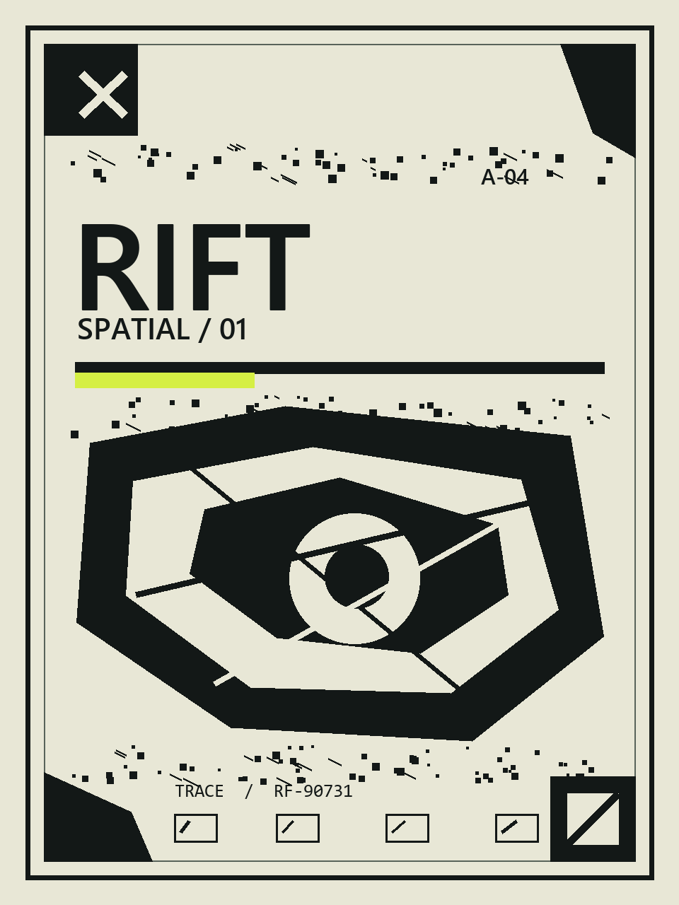

Ce se ascunde
în ecran.
Imaginea de pe laptop ancorează un artefact 3D. Atinge piesele, activează cele trei puncte, apoi glisează pentru a secționa reactorul și privește în interior din lateral.
- 01Deschide linkul pe iPhone în Safari.
- 02Permite camera din spate și încadrează imaginea întreagă.
- 03Deschide nucleul, rotește-l prin glisare și aprinde cele trei puncte. Apoi glisează în sus pentru secțiune.
SESIUNE ······Se pregătește conexiunea…
Trimite linkul pe iPhone. Conexiunea funcționează și fără server local.
Tehnologie și credite ↗RIFT / IMAGE TARGET

ȚINTĂ STATICĂ / 960 × 1280SCAN 01
AȘTEPTARE
0 / 3